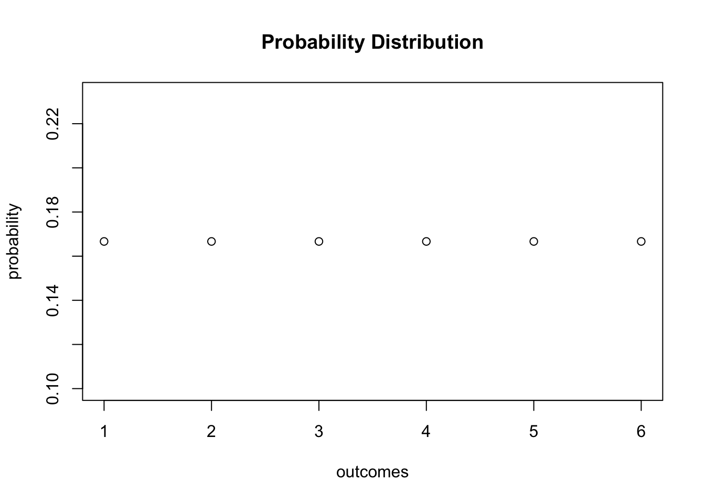
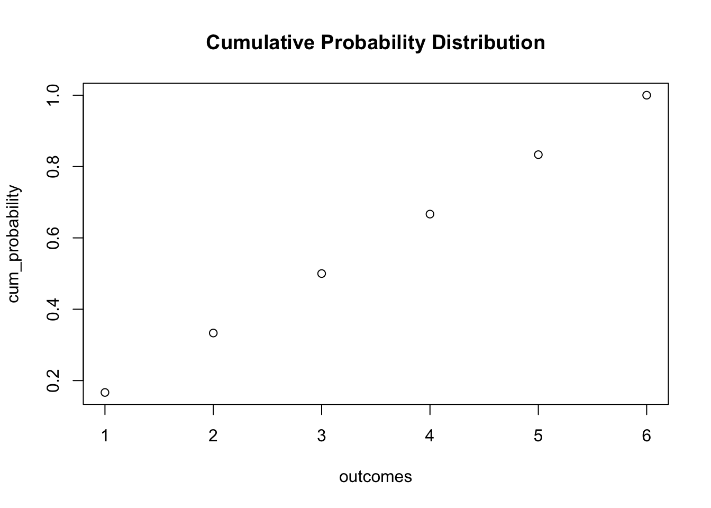
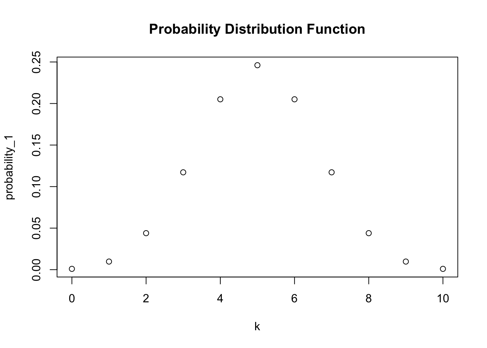
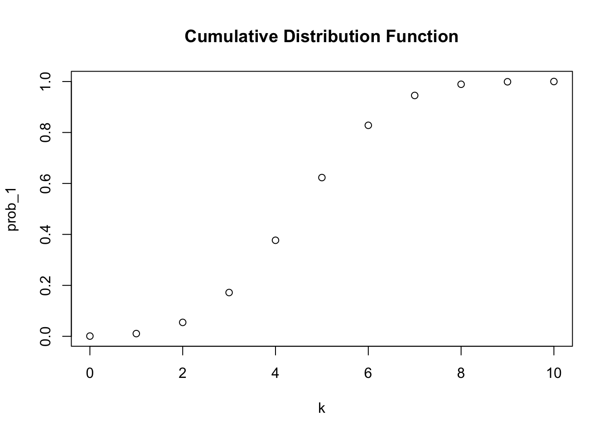
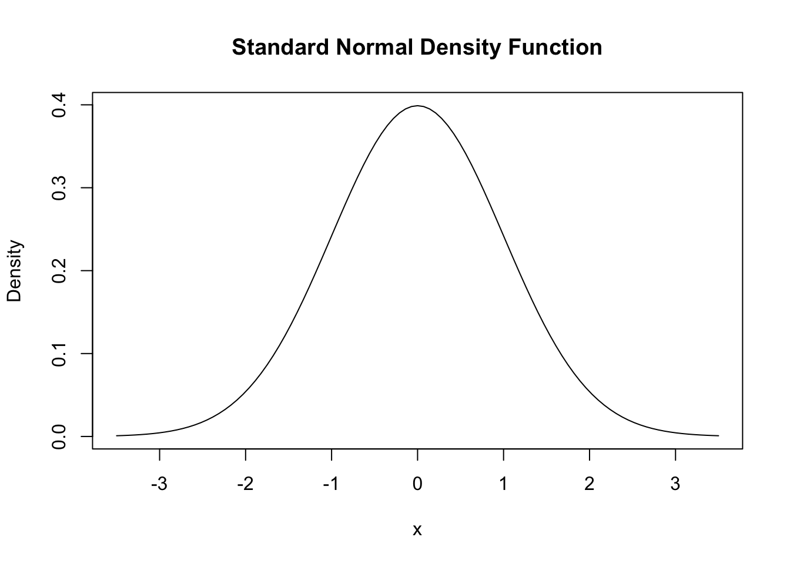
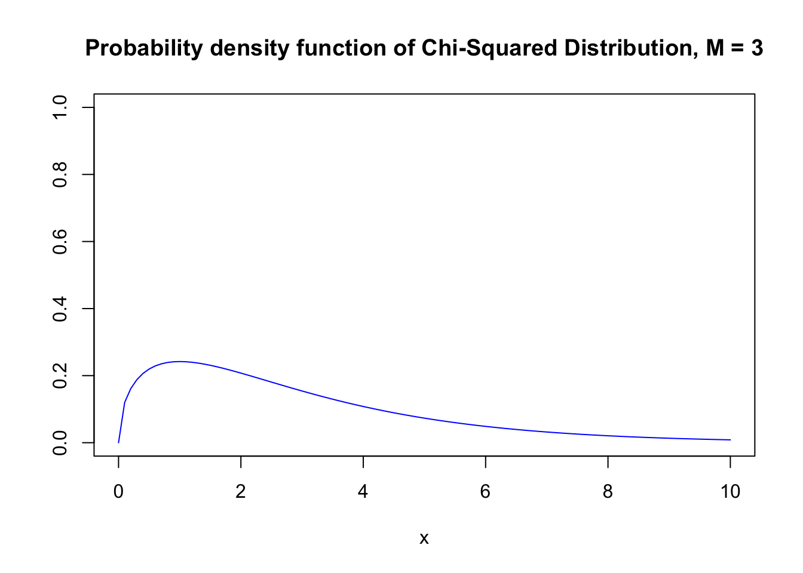
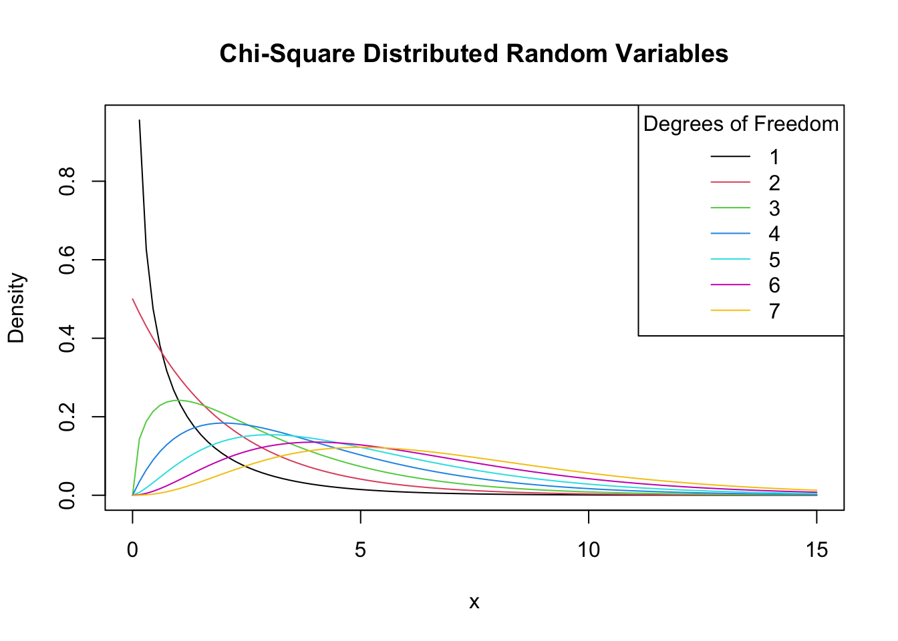

pacman::p_load(stats)8 Probability theory
Prerequisites:
We will use following packages for reproducing the contents of this chapter. For managing the necessary packages, we will use pacman package manager.
8.1 Random Variables
A random variable is essentially a random number. Random variables can be discrete or continuous.
8.1.1 Discrete Random Variables
Discrete random variables have discrete outcomes, e.g., 0 and 1. A typical example for a discrete random variable \(D\) is the result of a dice roll: in terms of a random experiment this is nothing but randomly selecting a sample of size 1 from a set of numbers which are mutually exclusive outcomes. Here, the sample space is
\[[{1,2,3,4,5,6}]\] A basic function to draw random samples from a specified set of elements is the function sample():
sample(1:6, 1)[1] 4Probability distribution: The probability distribution of a discrete random variable is the list of all possible values of the variable and their probabilities which sum to 1
Cumulative probability distribution: The cumulative probability distribution function gives the probability that the random variable is less than or equal to a particular value.
We can easily plot both functions using R. Since the probability equals \(1/6\) for each outcome, we set up the vector probability by using the function rep() which replicates a given value a specified number of times.
- generate the vector of probabilities
probability <- rep(1/6, 6)- plot the probabilities
plot(probability,
xlab = "outcomes",
main = "Probability Distribution") 
For the cumulative probability distribution we need the cumulative probabilities, i.e., we need the cumulative sums of the vector probability. These sums can be computed using cumsum()
- generate the vector of cumulative probabilities
cum_probability <- cumsum(probability)- plot the probabilites
plot(cum_probability,
xlab = "outcomes",
main = "Cumulative Probability Distribution") 
8.1.2 Bernoulli Random Variables
A Bernoulli random variable takes on only two values: 0 and 1, with probabilities \(1 − p\) and \(p\), respectively.
The result of a single coin toss is a Bernoulli distributed random variable, i.e., a variable with two possible distinct outcomes. We might simulate coin tossing with outcomes H (heads) and T (tails).
sample(c("H", "T"), 1) [1] "T"Imagine you are about to toss a coin 10 times in a row and wonder how likely it is to end up with a 5 times heads. This is a typical example of what we call a Bernoulli experiment as it consists of n=10
Bernoulli trials that are independent of each other and we are interested in the likelihood of observing k=5 successes H that occur with probability p=0.5 (assuming a fair coin) in each trial. Note that the order of the outcomes does not matter here.
In R, we can solve problems like the one stated above by means of the function dbinom()
dbinom(x = 5,
size = 10,
prob = 0.5) [1] 0.2460938We conclude that the probability of observing Head k=5 times when tossing a fair coin n=10 times is about 24.6%.
Now assume we are interested in P(4≤k≤7), i.e.the probability of observing 4, 5,6 or 7 successes for B(10,0.5). This may be computed by providing a vector as the argument x in our call of dbinom() and summing up using sum().
- compute P(4 <= k <= 7) using
dbinom()
sum(dbinom(x = 4:7, size = 10, prob = 0.5))[1] 0.7734375The probability distribution of a discrete random variable is nothing but a list of all possible outcomes that can occur and their respective probabilities. In the coin tossing example we have 11 possible outcomes for k.
- set up vector of possible outcomes:
k <- 0:10
k [1] 0 1 2 3 4 5 6 7 8 9 10To visualize the probability distribution function of k we may therefore do the following:
- assign the probabilities
probability_1 <- dbinom(x = k,
size = 10,
prob = 0.5)- plot the outcomes against their probabilities
plot(x = k,
y = probability_1,
main = "Probability Distribution Function") 
In a similar fashion we may plot the cumulative distribution function of k by executing the following code chunk:
- compute cumulative probabilities
prob_1 <- pbinom(q = k,
size = 10,
prob = 0.5)- plot the cumulative probabilities
plot(x = k,
y = prob_1,
main = "Cumulative Distribution Function") 
8.1.3 Mean and Variance
- Compute mean of natural numbers from 1 to 6
mean (1:6)[1] 3.5- An example of sampling with replacement is rolling a dice three times in a row.
– Set seed for reproducibility and rolling a dice three times in a row
set.seed(1)
sample(1:6, 3, replace = T)[1] 1 4 1Note that every call of sample(1:6, 3, replace = T) gives a different outcome since we draw with replacement at random. To allow you to reproduce the results of computations that involve random numbers, we will used set.seed() to set R’s random number generator to a specific state.
This is convenient for us:
If we provide the same seed twice, we get the same sequence of numbers twice. Thus, setting a seed before executing R code which involves random numbers makes the outcome reproducible!
We could also consider a much bigger number of trials, 10000 say.
- Set seed for reproducibility. Compute the sample mean of 10000 dice rolls
set.seed(1)
mean(sample(1:6,
10000,
replace = T))[1] 3.51388.2 Probability Distributions of Continuous Random Variables
Since a continuous random variable takes on a continuum of possible values, we cannot use the concept of a probability distribution as used for discrete random variables. Instead, the probability distribution of a continuous random variable is summarized by its probability density function.
Every probability distribution that R handles has four basic functions whose names consist of a prefix followed by a root name. As an example, take the normal distribution. The root name of all four functions associated with the normal distribution is norm. The four prefixes are
- d for “density” - probability function / probability density function
- p for “probability” - cumulative distribution function
- q for “quantile” - quantile function (inverse cumulative distribution function)
- r for “random” - random number generator
Thus, for the normal distribution we have the R functions dnorm(), pnorm(), qnorm() and rnorm().
8.2.1 The Normal Distribution
The probably most important probability distribution considered here is the normal distribution. Normal distributions are symmetric and bell-shaped. A normal distribution is characterized by its mean μ and its standard deviation σ, concisely expressed by \(N(μ,σ^2)\).
In R, we can conveniently obtain densities of normal distributions using the function dnorm(). Let us draw a plot of the standard normal density function using curve() together with dnorm().
curve(dnorm(x),
xlim = c(-3.5, 3.5),
ylab = "Density",
main = "Standard Normal Density Function") 
8.3 The Chi-Squared Distribution
Chi-square distributions are a family of continuous probability distributions. - plot the probability density function
curve(dchisq(x, df = 3),
xlim = c(0, 10),
ylim = c(0, 1),
col = "blue",
ylab = "",
main = "Probability density function of Chi-Squared Distribution, M = 3")
In the next step, we loop over degrees of freedom M=2,…,7 and add a density curve for each M to the plot. We also adjust the line color for each iteration of the loop by setting col = M. At last, we add a legend that displays degrees of freedom and the associated colors.
# plot the density for M=1
curve(dchisq(x, df = 1),
xlim = c(0, 15),
xlab = "x",
ylab = "Density",
main = "Chi-Square Distributed Random Variables")
# add densities for M=2,...,7 to the plot using a 'for()' loop
for (M in 2:7) {
curve(dchisq(x, df = M),
xlim = c(0, 15),
add = T,
col = M)
}
# add a legend
legend("topright",
as.character(1:7),
col = 1:7 ,
lty = 1,
title = "Degrees of Freedom")
- Increasing the degrees of freedom shifts the distribution to the right (the mode becomes larger) and increases the dispersion (the distribution’s variance grows).